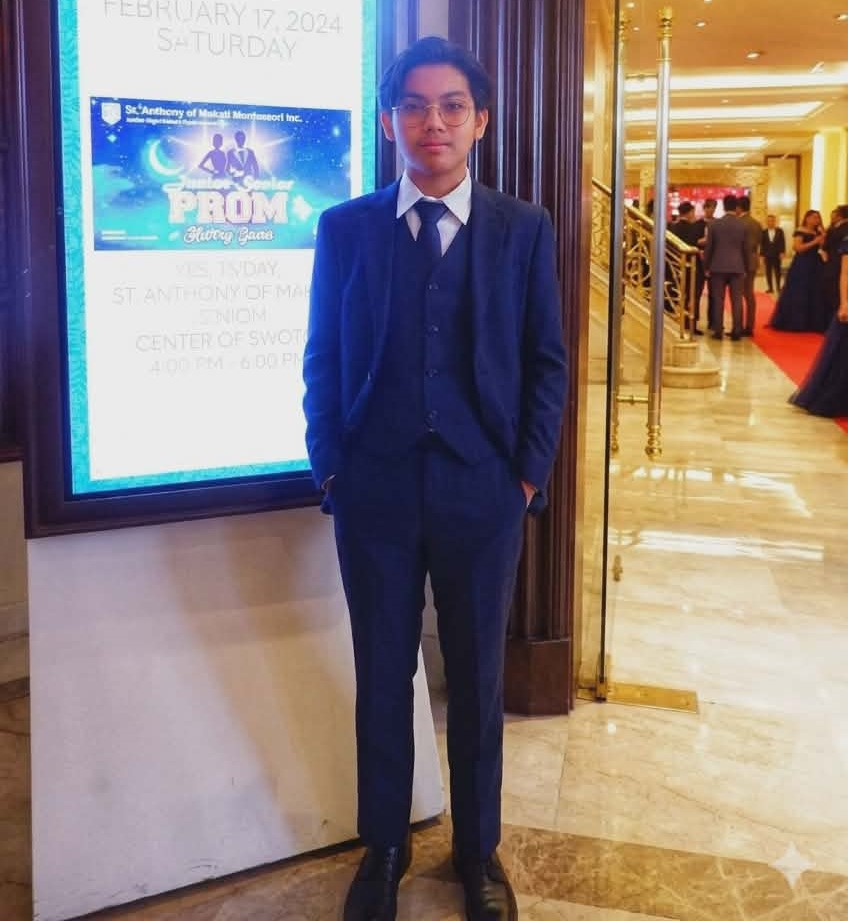
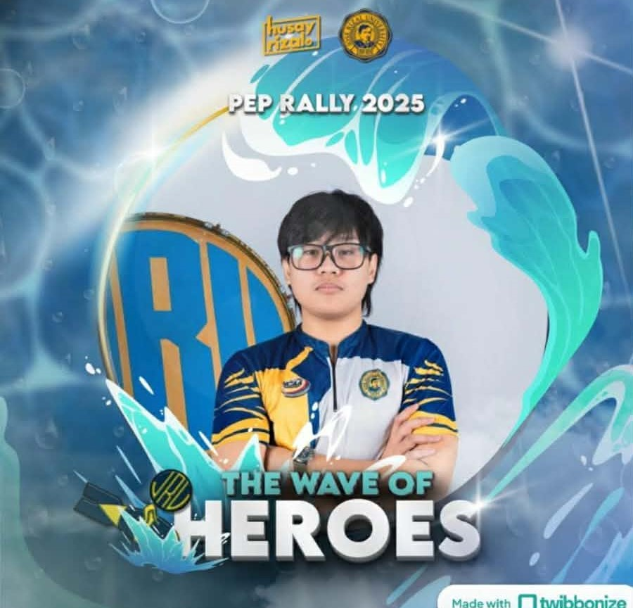
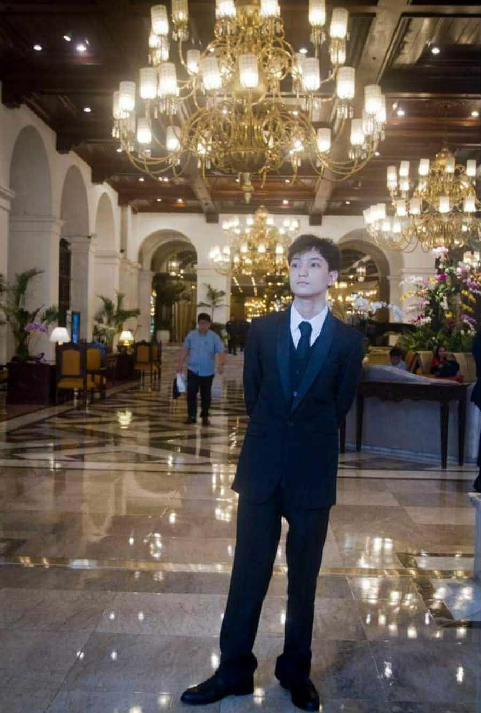
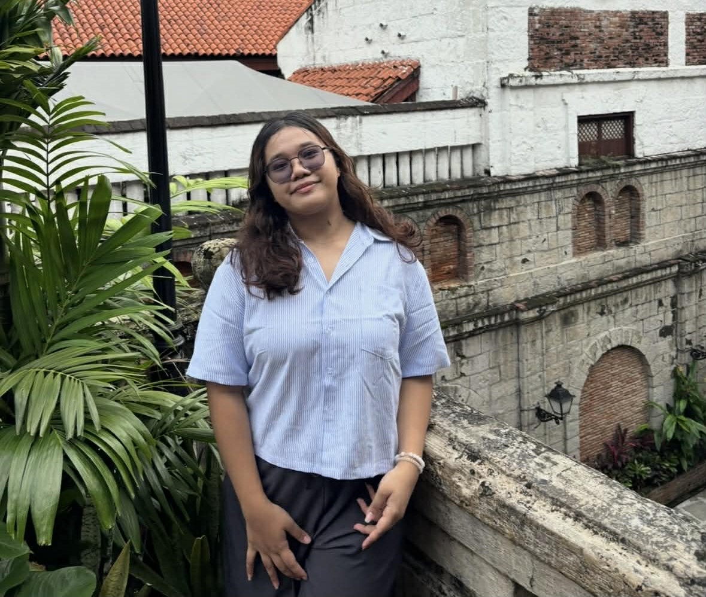
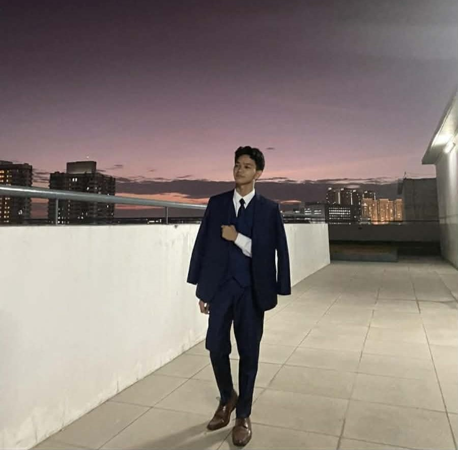

A sustainability project that transforms discarded materials into meaningful artistic expressions, fostering environmental awareness and creative empowerment in our community.
Explore the ProjectThis project was conceptualized and executed by Group 4 a dedicated set of students from Jose Rizal University. Wanting to create a clean world by supporting sustainability while endorsing a creative mind to many different people.





Trash to Art is a project that promotes sustainability, environmental awareness, and creativity among Grade 12 STEM students at Jose Rizal University. This addresses the increasing issue of campus waste and improper disposal of recyclable materials by organizing a recycled installation art competition.
Students will collect recyclable materials within the university and create meaningful artworks that will be displayed at the school library. Through this activity, the initiative encourages students to view discarded material not as garbage, but as something that will bring a positive change to the environment.
The project follows an organized plan that includes a set of objectives, a timeline, budget allocation, safety guidelines, and measurable success indicators. It aims to increase student participation in recycling activities, foster creativity, and improve overall campus cleanliness.
By combining sustainability and artistic expression, Trash to Art seeks to create a lasting impact on students’ environmental responsibility while promoting innovation and collaboration within the school community.
| Expenses | Allocated Budget (₱) | Actual Spent(₱) | Variance |
|---|---|---|---|
| Awards (Medals, Certificates) | 450 | 300 | +150 Saved |
| Decorations (Paints,Prints, Colored Papers) | 450 | 550 | -100 Over |
| TOTAL | ₱900 | ₱850 | +₱50 Saved |
The project is composed to have a solution for the trash that is hindering the livelihood of the people. The product is created with decent materials and also at a cheap cost. The disadvantage of this product is that this is not a long-term solution due to its durability and quality. The goal of this project is to help the canals and sewers to become more sustainable. The website is a great platform to further express our product; although the website lacks a bit of flexibility, it's direct to the information. The team showed a productive performance by addressing the shortcomings and gaps of this project, evaluating its function and how it can be improved.
The positive impact of the project starts with trash being recycled to something beautiful and memorable. A group of students has diverted trash to art creating something more exquisite and pleasing and not only that, they dedicated themselves to create something that has no value to a graceful artwork. Non-participants and participants are intrigued by how simple trash and garbage became a wonderful art which showcases that even something that has no value can be stunning and ethereal. This also improved the environment and school grounds by supporting recycling students were encouraged to use materials such as plastic and papers to develop artworks all while cleaning the environment. Students also improved their awareness skills in arts and their love for the environment
The team reflects on the journey—the challenges overcome, unexpected joys, and personal transformations that shaped this project.
We completed our capstone by planning the exhibit layout, preparing sample artworks from recyclable materials, and creating a prototype of the event setup. It mostly went according to plan, but we had to adjust because of limited time and materials.
The main challenges were time management and coordinating with my groupmates while balancing other school requirements. We also had some difficulty gathering enough recyclable materials for our prototype.
I learned the importance of teamwork, proper planning, and creativity in solving real-world problems. According to the National Solid Waste Management Commission, recycling and community participation are important in reducing environmental problems, which directly connects to the goal of our project.
Based on project findings, the team puts forward the following recommendations for future projects and researches.
Collect recyclable materials early and use labeled boxes so trash is easy to sort and clean. This will help keep the school neat and organized.
Give each member a clear task, like collecting materials, designing the artwork, or organizing the event. This will make teamwork easier and less confusing.
Announce the event early on the school’s Facebook page and share the Google Form right away. This will help more students join and support recycling.
Original project proposal submitted to MIL teacher of Jose Rizal University including rationale, objectives, and methodology.
Official receipts for the materials to create the rewards and decoration of the venue.
Transcripts and summary notes of the groups participation and coordination of the project.